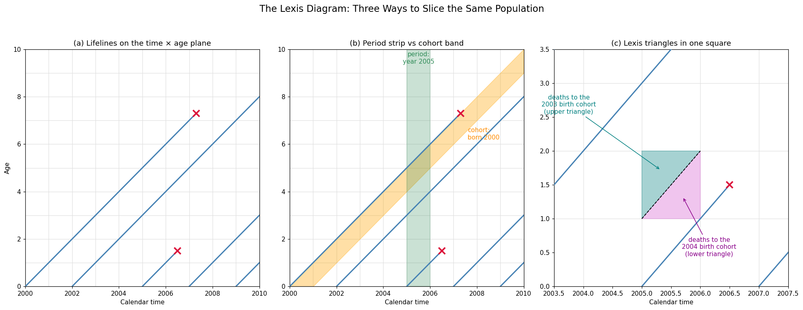

# ---- 1. Draw a Lexis diagram: lifelines + the three canonical slices ----
import numpy as np
import pandas as pd
import matplotlib.pyplot as plt
plt.rcParams['figure.dpi'] = 110
fig, axes = plt.subplots(1, 3, figsize=(18, 7))
# some lifelines: (birth_year, death_year or None if alive at 2010)
people = [
(2000, 2007.3), # dies at age 7.3
(2002, None),
(2005, 2006.5), # dies at age 1.5
(2007, None),
(2009, None),
]
T_END = 2010
for ax in axes:
# grid: one line per year of age and of calendar time
for t in range(2000, T_END + 1):
ax.axvline(t, color='0.88', lw=0.8, zorder=0)
for a in range(0, 11):
ax.axhline(a, color='0.88', lw=0.8, zorder=0)
for b, d in people:
t1 = d if d is not None else T_END
ax.plot([b, t1], [0, t1 - b], color='steelblue', lw=2, zorder=3)
if d is not None:
ax.plot(d, d - b, marker='x', color='crimson', ms=10, mew=2.5, zorder=4)
ax.set_xlim(2000, T_END); ax.set_ylim(0, 10)
ax.set_xlabel('Calendar time')
# (a) lifelines only
axes[0].set_title('(a) Lifelines on the time × age plane')
axes[0].set_ylabel('Age')
# (b) period slice (year 2005) vs cohort slice (2000 birth cohort)
t = np.linspace(2000, T_END, 100)
axes[1].fill_between(t, t - 2000, t - 2001, color='orange', alpha=0.35, zorder=1)
axes[1].axvspan(2005, 2006, color='seagreen', alpha=0.25, zorder=1)
axes[1].text(2005.5, 9.4, 'period:\nyear 2005', ha='center', fontsize=10, color='seagreen')
axes[1].text(2007.6, 6.2, 'cohort:\nborn 2000', fontsize=10, color='darkorange')
axes[1].set_title('(b) Period strip vs cohort band')
# (c) Lexis triangles inside one age × year square
# deaths in the square [age 1–2] × [year 2005] split by birth cohort
sq = axes[2]
sq.fill([2005, 2006, 2006], [1, 2, 1], color='orchid', alpha=0.4, zorder=1) # lower triangle: 2004 cohort
sq.fill([2005, 2005, 2006], [1, 2, 2], color='teal', alpha=0.35, zorder=1) # upper triangle: 2003 cohort
sq.plot([2005, 2006], [1, 2], color='k', lw=1.2, ls='--', zorder=2)
sq.annotate('deaths to the\n2004 birth cohort\n(lower triangle)', xy=(2005.7, 1.32), xytext=(2006.15, 0.45),
fontsize=10, color='darkmagenta', ha='center',
arrowprops=dict(arrowstyle='->', color='darkmagenta'))
sq.annotate('deaths to the\n2003 birth cohort\n(upper triangle)', xy=(2005.32, 1.72), xytext=(2003.75, 2.55),
fontsize=10, color='teal', ha='center',
arrowprops=dict(arrowstyle='->', color='teal'))
sq.set_title('(c) Lexis triangles in one square')
sq.set_xlim(2003.5, 2007.5); sq.set_ylim(0, 3.5)
fig.suptitle('The Lexis Diagram: Three Ways to Slice the Same Population', fontsize=15)
plt.tight_layout(rect=[0, 0, 1, 0.94])
plt.show()